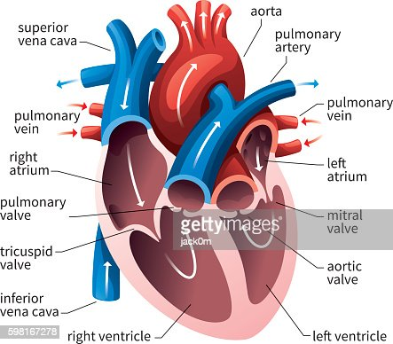

Circulatory System
The circulatory system is an organ system that allows blood to flow and carry oxygen, nutrients and hormones to the blood cells.
The blood circulatory system, is a system of organs that includes the heart, blood vessels, and blood which is circulated
throughout the entire body of a human or other vertebrate.
It includes the cardiovascular system, or vascular system, that consists of the heart and blood vessels. In an average adult human,
the heart beats 75 times per minute.
Components of blood
- Leucocytes(WBC)-Leucocytes are the cells of the immune system and they protect the body against infections. They are colorless.
- erythrocytes(RBC)-erythrocytes are the most common type of blood cells.They are red in color due to haemoglobin which carries oxygen in the pure
blood.
- thrombocytes(Platelets)-are colorless disc-shaped cells that form blood clots over wounds and cuts to stop bleeding.
Facts about the Circulatory System
- The circulatory system in the human body stretches 66,000 miles, more than two and a half times the circumference of the Earth
- The heart beats 2.5 billion times during the life of a 75-year-old.
- The heart expels 2 ounces of blood with each beat, five quarts of blood each minute, 220 million quarts in 70 years.
